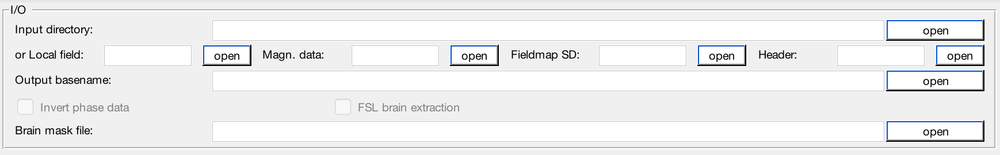

QSM Standalone¶
How can we map the magnetic susceptibility sources from local field map?¶
A local field (or tissue field) is the field generated by the magnetic susceptibility sources from the brain tissue. The assumption of the field generated by a magnetic susceptibility point source is a dipole field. We can then try to compute the susceptibility values by deconvolving the local field with a dipole field. However, due to the fact that the dipole field in the k-space (i.e. the dipole kernel) has zero values on the cone surface at 54.7° and values close to this surface will also be close to zeros. As a result, the number of unknown parameters is more than the measurements we have in the data, leading to the problem ill-conditioned and the resulting QSM map has the so-called streaking artefact. To solve the ill-conditioned problem, most of the QSM algorithms try to add a regularisation term in the QMS dipole inversion problem, imposing spatial smoothness in the QSM map and/or the QSM map has similar anatomical features as shown in the magnitude images in order to reduce the streaking artefact in the QSM result.
Structure of the application¶
This standalone consists of two panels:
- I/O panel, and
- QSM panel.
The detailed description of each panel is given below:
I/O panel¶
Data input
This application accepts two types of data input method:
- Specify a directory that contains all NIfTI images. Please specify the names of your data as in the following:
- Local field data: must contain the string ‘local-field’ in the filename, e.g. local-field.nii.gz;
- Header: must contain the string ‘header’ in the filename, e.g. header.mat;
- Magnitude data: must contain the string ‘magn’ in the filename, e.g. magn.nii.gz;
- (optional) Fieldmap standard deviation data: must contain the string ‘fieldmap-sd’ in the filename, e.g. fieldmap-sd.nii.gz;
- (optional) Mask data: if provided, must contain string ‘mask’ in the filename, e.g. mask.nii.gz, or
- Specify the required data separately using the GUI buttons.
- Specify a directory that contains all NIfTI images. Please specify the names of your data as in the following:
Data output
You can specify the prefix of the data output name in the editable field ‘Output basename’. By default, the Sepia output will be stored in a directory named ‘output’ under the input directory, i.e. ‘/your/input/directory/output/’ with prefix ‘squirrel’. You can change the default output directory and basename to whatever you need. If the output directory does not exist, the application will create the directory.
QSM panel¶

Method:
Thresholded k-space division
closed-form solution with L2-norm regularisation
STI suite v3.0 implementation of iterative LSQR approach
Fast algorithm for nonlinear susceptibility inversion
STI suite v3.0 Star-QSM
Morphology enabled dipole inversion (MEDI+0)
Output
The output of the standalone application is given below:
- QSM.nii.gz (quantitative susceptibility map, in ppm)